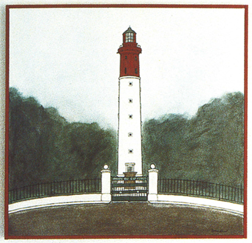

Le Phare du Cap-Ferret
|  |
Le Cap-Ferrett, acrylique sur toile, 100*100cm sur couverture de revue n°20 de février 1999Le Cap-Ferrett, acrylique sur toile, 100*100cm sur couverture de revue n°20 de février 1999Le Cap-Ferrett, acrylique sur toile, 100*100cm sur couverture de revue n°20 de février 1999Le Cap-Ferrett, acrylique sur toile, 100*100cm sur de février 1999Le Cap-Ferrett, acrylique sur toile, 100*100cm sur couverture de revue n°20 de février 1999Le Cap-Ferrett, acrylique sur toile, 100*100cm sur couverture de revue n°20 de février 1999Le Cap-Ferrett, acrylique sur toile, 100*100cm sur couverture de revue n°20 de février 1999Le Cap-Ferrett, acrylique sur toile, 100*100cm sur couverture de revue n°20 de février 1999Le Cap-Ferrett, acrylique sur toile, 100*100cm sur couverture de revue n°20 de février 1999Le Cap-Ferrett, acrylique sur toile, 100*100cm sur couverture de revue n°20 de février 1999Le Cap-Ferrett, acrylique sur toile, 100*100cm sur couverture de revue n°20 de février 1999Le Cap-Ferrett, acrylique sur toile, 100*100cm sur couverture de revue n°20 de février 1999Le Cap-Ferrett, acrylique sur toile, 100*100cm sur couverture de revue n°20 de février 1999 |